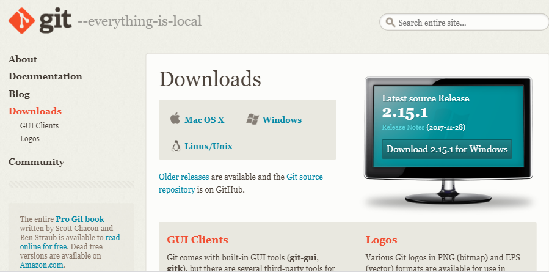

Git命令
1.Git提交到github
1.1 安装git
1.2 github创建仓库
1.3 初始化用户
1.4 提交到github
Published with GitBook
1.1 安装git
1.2 安装git
如果已安装git，请跳过本节
从下面地址中选择系统对应版本下载，并安装。安装完成后，后面可以通过git命令行或者图形化界面提交项目到github
git下载地址：
https://git-scm.com/download/

results matching "
"
No results matching "
"